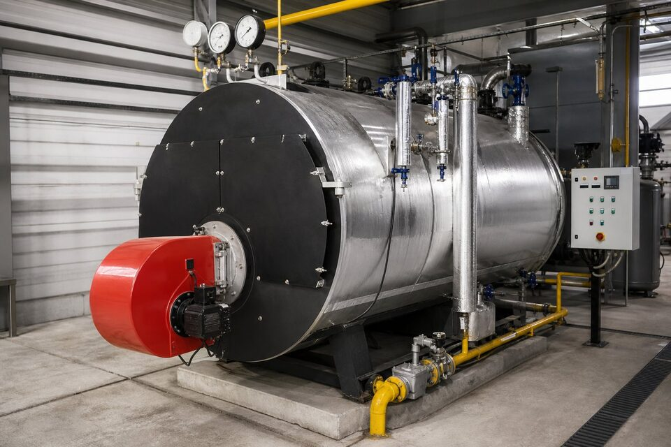

نقشه کلی یک سیستم بخار
در بسیاری از صنایع مانند غذایی، نساجی، کاغذ و شیمیایی، بخار آب حامل اصلی انرژی حرارتی است. چرخه با دیگ بخار آغاز میشود که آب تصفیهشده را با سوخت گاز یا گازوئیل به بخار تبدیل میکند؛ سپس بخار از طریق مدار توزیع به مصرفکنندهها مانند مبدلها، راکتورها و اتوکلاوها میرسد. در نقطه مصرف، بخار با آزاد کردن گرمای نهان خود به کندانس تبدیل میشود و تلههای بخار این کندانس را بدون عبور بخار زنده از سیستم خارج میکنند. در یک طراحی درست، کندانس به مخزن بازگشت هدایت و دوباره به دیگ بازگردانده میشود. هر نشتی، تله خراب یا عایقکاری ناقص در این چرخه، مستقیما به مصرف سوخت اضافه میشود؛ به همین دلیل کیفیت تجهیزات سیستم بخار، یک موضوع اقتصادی است نه فقط فنی.

دیگ بخار و متعلقات
دیگهای صنعتی رایج در دو ساختار لوله آتش و لوله آب ساخته میشوند؛ لوله آتش برای ظرفیتهای متوسط و فشارهای رایج صنعتی انتخابی ساده و اقتصادی است و لوله آب برای ظرفیتها و فشارهای بالاتر به کار میرود. انتخاب دیگ باید با ظرفیت واقعی به اضافه حاشیه مناسب، فشار کاری موردنیاز مصرفکنندهها و نوع سوخت در دسترس انجام شود. متعلقات دیگ شامل مشعل، سیستم تغذیه آب، پمپها، شیرهای اطمینان، سطحسنجها و کنترلهای فشار است و هر کدام باید گواهی و کالیبراسیون معتبر داشته باشند. ساخت دیگ نیز مشمول کدهای دیگ بخار است و خریدار باید مدارک ساخت شامل نقشهها، گواهی متریال و گزارش آزمونهای هیدرواستاتیک را از سازنده بخواهد؛ دیگ بدون مدارک کامل، هم از نظر قانونی و هم بیمهای پرریسک است.
تلههای بخار: کوچک اما تعیینکننده
تله بخار قطعهای است که کندانس و گازهای غیرقابل تقطیر را از سیستم خارج میکند اما اجازه عبور بخار زنده را نمیدهد. انواع رایج آن شامل شناوری، سطل معکوس، ترمودینامیکی و ترموستاتیک است که هر کدام برای فشار، ظرفیت و شرایط نصب خاصی مناسباند. اهمیت اقتصادی تلهها در آمارهای شناختهشده انرژی نهفته است: بخش قابل توجهی از اتلاف بخار در صنایع، از تلههای خراب یا بدسایز ناشی میشود. بنابراین برنامه بازرسی دورهای تلهها با ابزارهای تشخیص مانند دما و فراصوت باید بخشی از نگهداری روتین باشد. در خرید تله، ذکر فشار، دما، ظرفیت کندانس و شرایط بالادست و پاییندست الزامی است تا مدل درست پیشنهاد شود؛ تله نامتناسب یا زود خراب میشود یا بخار را هدر میدهد.
مدار توزیع و بازگشت کندانس
- لولهگذاری بخار: سایز بر اساس سرعت و افت فشار مجاز، با شیب مناسب به سمت نقاط تخلیه.
- عایقکاری: کاهش تلفات حرارتی و حفاظت پرسنل؛ نقاط بدون عایق، منابع اتلافاند.
- شیرها: قطع و وصل، کنترل فشار و شیرهای اطمینان در نقاط مشخص.
- سپراتورها: جداسازی قطرات آب از بخار قبل از مصرفکنندههای حساس.
- سیستم بازگشت کندانس: مخزن جمعآوری، پمپهای بازگشت و پایش کیفیت آب.
در طراحی مدار توزیع، کیفیت بخار تحویلی به مصرفکننده هدف نهایی است: بخار خشک با فشار پایدار. افت فشار بیش از حد، رطوبت بالای بخار و ضربه قوچ، نشانههای طراحی یا نصب نادرستاند که هم مصرف انرژی را بالا میبرند و هم عمر تجهیزات را کم میکنند. در پروژههای نوسازی، ارزیابی وضعیت موجود با پایش نقاط ضعف، قبل از خرید تجهیزات جدید انجام شود تا سرمایهگذاری در جای درست هزینه گردد.
راندمان و نگهداری
راندمان دیگ تحت تاثیر دمای گاز خروجی، تلفات تابشی و کیفیت احتراق است و با نگهداری مناسب میتوان آن را در سطح طراحی حفظ کرد. دودهزدایی دورهای سطوح حرارتی، تنظیم مشعل و پایش کیفیت آب دیگ از اقدامات کلیدیاند؛ رسوب در سمت آب، انتقال حرارت را کاهش و دمای فلز را افزایش میدهد و در موارد شدید به آسیب دیگ منجر میشود. در سمت مصرف، بخارگیری به موقع تلهها و ترمیم عایقهای آسیبدیده، بازگشت سرمایه سریعی دارند. بسیاری از صنایع با یک برنامه ممیزی انرژی سیستم بخار، فرصتهای صرفهجویی بزرگی شناسایی کردهاند که اغلب هزینه برنامه را در ماههای اول بازمیگرداند.
نکات خرید تجهیزات سیستم بخار
در استعلام دیگ، ظرفیت بخار در فشار کاری، نوع سوخت، محل نصب و الزامات کد ساخت را ذکر کنید و حتما فهرست کامل متعلقات را بخواهید، چون برخی فروشندگان متعلقات را جداگانه قیمت میدهند. برای تلهها و شیرها، شرایط فرایند هر نقطه نصب را ارائه دهید و از خرید صرفا بر اساس سایز پرهیز کنید. در پروژههای بزرگ، پکیج کامل شامل نصب، راهاندازی و آموزش بهرهبردار را در قرارداد ببینید؛ سیستم بخار بهرهبرداری نادرست میتواند هم پرخطر و هم پرمصرف باشد. مدارک ساخت، گواهیهای ایمنی و برنامه قطعات یدکی نیز باید از ابتدا در قرارداد دیده شوند.
جمعبندی
سیستم بخار یک چرخه انرژی است که کیفیت هر جزء آن، از دیگ تا تله و عایق، بر هزینه سوخت و ایمنی واحد اثر میگذارد. با انتخاب تجهیزات مطابق کدها، بازرسی دورهای تلهها و بازچرخانی کندانس، میتوان هم مصرف انرژی را کاهش داد و هم عمر تجهیزات را افزایش داد؛ و خرید آگاهانه با مدارک کامل، پایه این بهرهوری است.
سوالات رایج
اجزای اصلی یک سیستم بخار کداماند؟
دیگ بخار برای تولید، مدار توزیع شامل لوله و شیر، تلههای بخار برای جداسازی کندانس، و سیستم بازگشت کندانس؛ هر بخش تجهیزات اختصاصی خود را دارد.
تله بخار چه وظیفهای دارد؟
خروج کندانس و هوا از سیستم بدون هدررفت بخار زنده؛ تلههای خراب یکی از بزرگترین منابع اتلاف انرژی در سیستمهای بخار هستند و باید دورهای بازرسی شوند.
چرا بازگشت کندانس اهمیت دارد؟
کندانس هم آب تصفیهشده و هم انرژی حرارتی دارد؛ بازگرداندن آن به دیگ، مصرف آب، مواد شیمیایی و سوخت را به شدت کاهش میدهد و راندمان کل سیستم را بالا میبرد.
در خرید دیگ بخار چه نکاتی مهم است؟
ظرفیت و فشار کاری با حاشیه مناسب، راندمان و نوع سوخت، متعلقات ایمنی استاندارد، گواهیهای ساخت مطابق کدهای دیگ و خدمات پس از فروش و قطعات یدکی.
مطالب مرتبط
تامین دیگ بخار، تلهها و متعلقات مطابق کدهای دیگ بخار با مدارک ساخت و گواهیهای ایمنی.
مشاهده صفحه محصول ← ثبت RFQ همین محصولتامین این تجهیزات را به پیشرو تجهیز فرتاک بسپارید
شرکت پیشرو تجهیز فرتاک تامینکننده تخصصی تجهیزات صنعتی برای پروژههای نفت، گاز، پتروشیمی، فولاد و نیروگاهی است. برای دریافت پیشنهاد فنی و قیمت، استعلام (RFQ) خود را ثبت کنید تا کارشناسان مهندسی فروش در کوتاهترین زمان پاسخ دهند.
- تامین تجهیزات صنایع نفت و گازپکیج مواد مطابق وندورلیست
- تامین برق صنعتیتجهیزات تابلو و حفاظتی